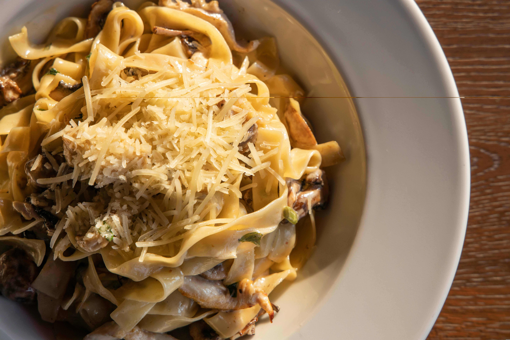

Chicken à la King

Description
Chicken à la King is a simple yet elegant dish, perfect for using up
leftover chicken or turkey. Made with a creamy sauce, onions, peppers, and
mushrooms, it's a hearty and comforting meal. Serve it over rice, toast,
or noodles. It can also be prepared ahead of time and reheated easily.
Ingredients
- 1/2 cup butter
- 1 cup mushrooms, chopped
- 1 green, red, or yellow bell pepper, chopped
- 1/2 cup flour
- 1 teaspoon salt
- 1/4 teaspoon ground black pepper
- 1 and 1/2 cups milk
- 1 and 1/4 cups hot water
- 4 cooked, boneless chicken breast halves, chopped
Steps
- Gather all ingredients.
-
Melt the butter in a large skillet over medium heat. Add the onions and
cook, stirring occasionally, until they are soft and almost translucent.
-
Then add the mushrooms and bell pepper, and continue to cook for about 5
minutes, stirring occasionally.
-
Remove from the heat. Stir in flour, salt, and black pepper. Cook over
low heat, stirring constantly, until mixture is bubbly.
-
Stir in milk and water. Increase heat to medium-high and bring to a
boil, stirring constantly. Boil and stir for 1 minute.
- Stir in chicken and heat through.
- Serve and enjoy!
Home